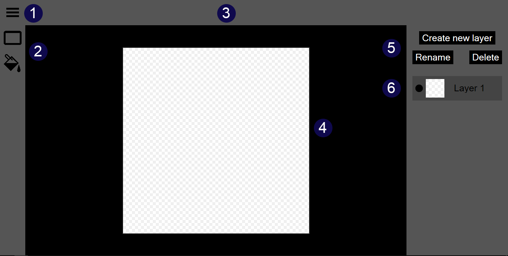

- The button for showing and hiding the
editor navigation.
- The
toolbar, containing tools that can be used to interact with the image in the editor.
- The
editor header, containing controls for the selected tool when a tool is selected.
- The
canvas, where the image being edited is displayed.
- The
layer manipulation controls, containing controls for creating new
raster layers, renaming layers, and deleting layers.
- The
layer list, containing the list of layers currently in the editor, with controls for toggling their visibility and re-ordering them.